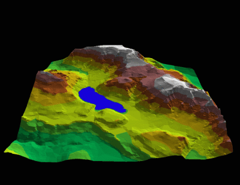
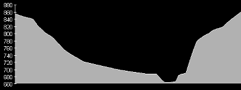
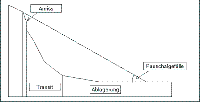
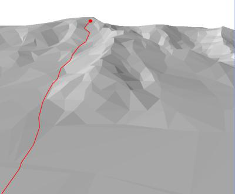
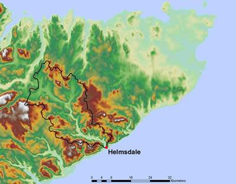
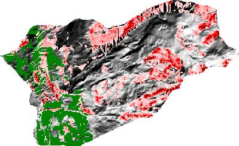
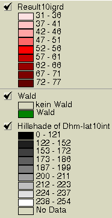

Geomorphometrie oder wie Informationen aus Ableitungen entstehen
Die Geomorphometrie beschäftigt sich mit der quantitativen Beschreibung und Analyse der Erdoberfläche. Zu diesem Zweck werden aus digitalen Geländemodellen (DGM) verschiedene Geländeparameter abgeleitet. Neigung, Exposition und Kurvatur (Krümmung) des Geländes gehören zu den Informationen, die am häufigsten aus Geländemodellen extrahiert und in verschiedensten Anwendungen eingesetzt werden. Als Beispiele seien die Verwendung der Exposition in vegetationsgeographischen Fragestellungen, die Modellierung von potentiellem alpinem Permafrost (Höhe, Exposition und Neigung) oder die Modellierung von Lawinengefahren (Neigung, Exposition) genannt.
Beispiele von impliziter Information
Ein digitales Geländemodell enthält neben der reinen Höhe der Raumkoordinaten (oder Raumflächen) eine Reihe weiterer impliziter Information. "Implizite Information" heißt, dass zusätzliche Informationen aus der lagebezogenen Höheninformation eines Geländemodells abgeleitet werden kann, ohne explizit gespeichert zu sein. Zur Ableitung solcher impliziter Information sind in der Regel geeignete mathematische Methoden notwendig. Dieser Zusammenhang von impliziter und expliziter Information lässt sich analog auf eine Vielzahl von Datensätzen und Geoobjekten übertragen. Die nachfolgenden Abbildungen zeigen ein Geländemodell des Türlersees (bei Zürich in der Schweiz) und durch Ableitung erzeugte Information aus diesen Daten.
Primärdatensatz Höhe (GITTA 2005) |
Digitales Geländemodell vom Gebiet Türlersee als geschummerte Höhenschichtdarstellung (Hugentobler 2000) |
Profil (GITTA 2005) |
Auf Grundlage eines digitalen Geländemodells können durch Extraktion der Höhenwerte Profile zwischen zwei Punkten berechnet werden. Derartige Profile sind in vielen anwendungsorientierten Fragestellungen relevant, z. B. für die Planung im Straßenbau oder als Sichtlinien (Seilbahnen, Funkverbindungen). Erweitert man dieses Konzept können alle räumlich verteilten Informationen auf einer direkten also geometrisch kürzesten Verbindungen analysiert und dargestellt werden. |
Profilllinie als Pauschalgefälle (GITTA 2005) |
Das Pauschalgefälle ist eine weitere Ableitung aus der Profillinie. Es beschreibt die mittlere Neigung zwischen zwei Punkten im Gelände und ist folglich skalenabhängig. Ein wichtiges Anwendungsgebiet ist die einfache Abschätzung von Sturz-Prozessen (Steinschlag, Eisschlag). |
Falllinie (GITTA 2005) |
In einem digitalen Geländemodell kennzeichnet die Falllinie, ausgehend von einem beliebigen Punkt, den Pfad (=verknüpfte Einzelstrecken) entlang dessen die Schwerkraft wirkt (=Vektor Oberlieger-Unterlieger). Oder konkret ausgedrückt den Weg des fließenden Wassers oder rollenden Steins. So können u. a. zur Modellierung von Eis- und Steinschlag, aber auch für die Berechnung von Einzugsgebieten verwendet werden. Erweitert man dieses Konzept indem z.B. statt Höhenwerte in Metern Kosten in Euro als "Kostengebirge" aufgefasst werden, Können so Pfade geringster Kosten (oder Widerstands) bestimmt werden. |
Wassereinzugsgebiete (GITTA 2005) |
Die Ableitung von Wassereinzugsgebieten aus digitalen Geländemodellen nutzt das Konzept der Falllinie. Vernetzt man alle Falllinien die einen gemeinsamen Unterlieger als Ausflusspunkt haben und grenzt diesen Raum ab so erzeugt man ein durch die Oberflächenmorphologie determiniertes Wassereinzugsgebiet. Solche Wassereinzugsgebiete sind eine wichtige Komponente in vielen hydrologischen, geomorphologischen und landschaftskundlichen GIS-Anwendungen. |
Die zuvor angesprochenen Beipiele sollen einen Eindruck von der Vielfältigkeit der Informationsgewinnung durch Ableitung vermitteln helfen. In der nachfolgenden Tabelle wird ein Überblick über weitere Informationsprodukte, die aus Geländemodellen ableitbar sind gegeben. Dieser Überblick ist keineswegs vollständig. Vielmehr stellt er in willkürlicher Mischung unterschiedliche Stufen der Ableitung zusammen. Versuchen Sie zu herauszufinden welche Information eine Ableitung erster bzw. zweiter Ordnung ist.
| Information | Output-Typ | Beschreibung |
|---|---|---|
| Neigung | Zahl | Neigung an einem Punkt |
| Pauschalgefälle | Zahl | Gefälle zwischen zwei Punkten |
| Exposition | Zahl | Ausrichtung des Hanges |
| Kurvatur | Zahl | Krümmung in eine bestimmte Richtung (z. B. Plan- oder Profilkurvatur) |
| Intervisibilität | Ja/ Nein | Gibt an, ob der Betrachter einen bestimmten Punkt sehen kann |
| Sichtbares Gebiet | Polygone | Gebiet, welches von einem oder mehreren Punkten aus sichtbar ist |
| Reliefschatten | Bild | Schattenwurf durch das Gelände bei einer bestimmten Sonnenposition |
| Flussnetzwerk | Linien | |
| Einzugsgebiete | Polygone | |
| Profil | Linie | Höhenprofil entlang einer bestimmten Linie |
| Volumen | Zahl | Füllungs- oder Abtragsvolumen für ein Gebiet und für eine bestimmte Höhe |
| Perspektivische Abbildung | Bild | |
| Falllinie | Linie | Pfad entlang der steilsten Neigung |
Mit Hilfe von Geländemodellen (oder wie zuvor bereits skizziert Werteoberflächen) können in einem GIS relativ komplexe Sachverhalte modelliert werden. Nachfolgend wird gezeigt, wie man mit Hilfe eines GI-S potenziell von Steinschlag betroffene Gebiete identifizieren kann. Als Ausgangsdaten sind folgende kontinuierliche Rauminformationen verfügbar:
- Felsflächen
- Waldflächen
- Digitales Geländemodell
Beispiel Steinschlagmodellierung
Nachfolgend ist die Konzeption einer GIS gestützten einfachen Steinschalgsgefärdungskarte dargestellt. Konzeptionell wird anstehender Fels (Felsflächen) als potenzielles Anrissgebiet betrachtet. Unter der schlichten Annahme, dass nach Newtons Gravitationsgesetz fallende Steine sich exakt entlang der Falllinie talwärts bewegen, wird zur Identifikation der gravitativ betroffenen Unterlieger von jeder Felsfläche (Pixel, Polygon) die Falllinie berechnet. Die gravitative Steinbewegung kommt, so die Annahme, zum Stillstand, wenn das Pauschalgefälle das erste Mal geringer als 31 Grad wird (empirischer Schwellwert). Weiterhin wird die Annahme getroffen, dass in Waldgebieten ein Stein schneller zum Stillstand kommt (Bäume wirken als Hindernisse). Daher wird dort den Schwellenwert des Pauschalgefälles höher gesetzt (z.B. auf 33 Grad). Die untenstehende Abbildung zeigt das Resultat einer solchen Analyse in der Umgebung der Gemeinde Saas Baalen. Rot eingefärbt sind die steinschlaggefährdeten Gebiete, wobei der Farbton das resultierende Pauschalgefälle in Grad repräsentiert.
Steinschlaggefährungsanalyse der Gemeinde Saas Baalen |
 Steinschlaglegende |
Bearbeiten Sie...
Vor dem Hintergrund der Ihnen bereits bekannten Abfragemöglichkeiten klingt der Begriff Steinschlagmodellierung etwas zu gewichtig.
- Sehen Sie einen Unterschied zwischen Ihren bisherigen Abfragen und den Ergebnissen der Steinschlagmodellierung?
- Falls ja welche?
- Könnten Sie eine vergleichbare Modellierung auch mit den Ihnen bekannten Daten für Rarotonga durchführen? Benötigen Sie noch weitere Datensätze?